GAME DESIGN PORTFOLIO.
About Me
My name is Samuel Mcarthur-Mclean, I am a game designer from the UK currently living in Cambodia. After receiving a First Class Honours degree in Computer Games Design from Glasgow Caledonian University I went on to work for Aurorian Studios and then Freedom Games as a designer on One Lonely Outpost.
- Freedom Games: Game Designer 2022 - 2023
- Aurorian Studios: Game Designer 2020 - 2022
- Awarded a First Class Honours degree in Computer Games Design from Glasgow Caledonian University in 2020
- Worked on a game called Novoslavia which currently has over 559,000 views
- From 2014 – 2017 I worked as a journalist where I wrote news, reviews and previews from events such as EGX
Skills
- Game Design
- Creative Writing
- Working Remotely
Languages
-
 C#
C#
-  Gamemaker Language
-
 gdscript
gdscript
Tools
-
 Unity
Unity
- GameMaker Studio 2
-
.svg) MonoGame
MonoGame
-
 Unreal Engine
Unreal Engine
-
 Photoshop
Photoshop
-
 Aseprite
Aseprite
-
Godot
Approaches to Design
When designing games and mechanics I like to have the player learn subconsciously rather than being told through text what to do. The ability for games to teach complex systems to players in an intuitive way is something that interests me. For example, when it came to designing these elements in Cyber Sphere, symbols and colours were used rather than text to explain what the players were meant to do.
Professional Experience
Game Designer - One Lonely Outpost
Some of the major systems I was responsible for designing and overseeing implementation of were, terraforming, fishing, wildlife and the tutorial. After design approval, these were then handed off to the artists or programmers. I would be in constant contact to make sure everything was implemented to the design and worked as intended. From start to finish it was my responsibility.
- Documentation of new systems
- Responsible for seeing mechanics from documentation to implementation
-
Working in Engine
- Data Entry
- Level Design
- Game Balancing
- Quest Design
- Responsible for the game's tutorial
Game Designer Showreel
Cyber Sphere
This is a game I that I worked as a designer on. Our Client - a company called We Throw Switches - wanted an arcade game with a unique control scheme. I came up with the idea of a four-player game where the players would play using trackballs. This worked out well and the university even pushed the game at their showcase events, which led to us being given the chance to demo it as Scotland’s biggest gaming event, Resonate.

Showing Cyber Sphere at Resonate
The chance to show a game I had worked on at a convention was valuable experience for me. It felt I had come full circle from covering them as a journalist to now showing off a game there. The reception from people was great to see with groups of friends laughing and smiling as they played against each other. It gave me good experience in demoing and interacting with players.
Other Projects
Cyber Security
As one of the things that interests me about design is teaching players information through mechanics. This game aims to teach people about cyber security. Games normally teach the players their systems whereas this game looks at teaching real life information. The game takes place in a virtual desktop that offers different challenges and puzzles talking the player through a story of cyber security.
River Kings
This was project I started to try and experiment with different genres. It’s a 2D pixel art game about fishing that isn’t really about fishing. It starts off pretty simple but then progresses into over the top things like catching fish with a rhythm game and turning into a side scrolling shoot’em up.
Novoslavia
A game that looks at the consequences from the choices of someone working in the government of an ex-communist country. After years of unrest and revolts against its sovereign the Communist Union, a fragile peace has finally graced the country.
This game also featured in a let’s play that currently has 487,000 views.
FOLLOW ME TO THE DARK
Follow Me to the Dark game is a text-based spy thriller set in 1977 during the cold war. The player takes control of Phillip Coleman a disgraced spy who after being fired from his job at British Intelligence goes undercover to find the mole leaking information to the Russians.
Super Scrap Bot
This was a top-down game where the player takes control of a weak robot looking to collect scrap. They must make the other robots fights each other as you are not strong enough to take them on alone.
Mutiny Aboard the Exodus
A story driven game set on a corporate ship full of colonists heading for a distant planet. On board, the First Mate looks to his crew to help him save the ship from the irrational and cruel Captain. The player recruits crew members through conversations and gaining info about each member.
Béton Brut - Level Design
Inspired by Brutalist architecture and the impossible buildings of Étienne-Louis Boullée, Béton Brut has the player exploring an abandoned city. The game aims to capture isolation and uneasy spaces. The world has died and all the player can do is find a way out.